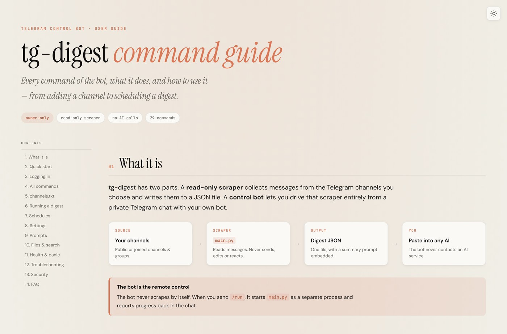
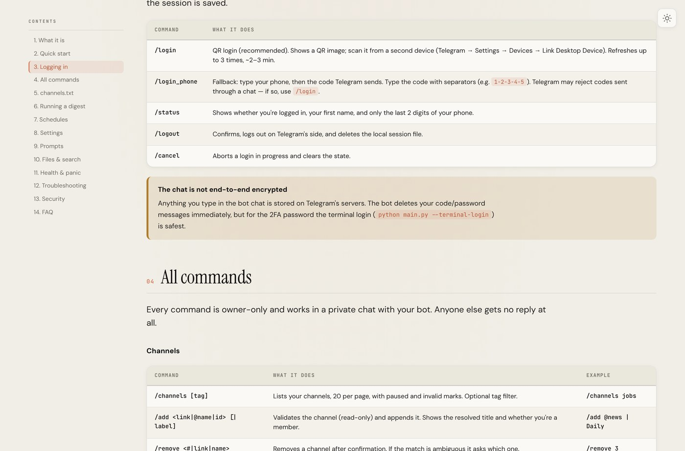

What it is
tg-digest is a read-only Telegram user bot that reads the text of the channels you choose, for a time window you choose, and writes it to one structured JSON file — with an embedded summary prompt — that you can paste into any AI.
It never sends anything, never reacts, never marks messages as read, and never uploads or stores anything outside your machine. A separate owner-only control bot lets you drive it from a private chat.

Why a user bot
The Bot API can only see channels a bot has been added to, and it cannot read history. To read your own subscriptions, the digest has to run as you — which is what Telethon's MTProto user client does. Because it is your real account, the code is deliberately conservative about joining and rate limits.
The control bot
The scraper and the control bot are two parts of one tool. The bot is the remote control: you send it a command, it runs the scraper as a separate process and reports back in the chat.
| Command | What it does |
|---|---|
/login | QR login — scan from a second device, no code through the chat |
/status | Logged in? Shows your first name and only the last 2 digits of your phone |
/channels | Lists your channels, with paused and invalid marks |
/run | Runs a digest for the selected window |
/schedule | Schedules recurring digests |
/logout | Confirms, then logs out on Telegram's side and deletes the local session |

How a run works
- You pick channels and a window from the bot chat.
- The scraper reads only those channels, for that window, and never writes to Telegram.
- Messages are formatted into a single digest JSON with a summary prompt embedded.
- You paste that file into ChatGPT, Claude or Gemini for a summary.
Outputs are searchable from the bot, and there is a full command guide published as a static site.
Security
Login is normally done by QR from the bot chat, so your OTP and 2FA never have to be typed in a terminal. Where they do, the terminal path is the safest option and is documented as such.
- Owner-only: only your numeric user id is served; every other message is silently ignored.
- Secrets stay local:
.env,*.session,output/and.cache/are all gitignored. - Honest about limits: the bot chat is not end-to-end encrypted, and the docs say so plainly.
Try it
It is a personal, local tool with 530 passing tests and a published command guide. Clone it, add your API credentials, and start the control bot.